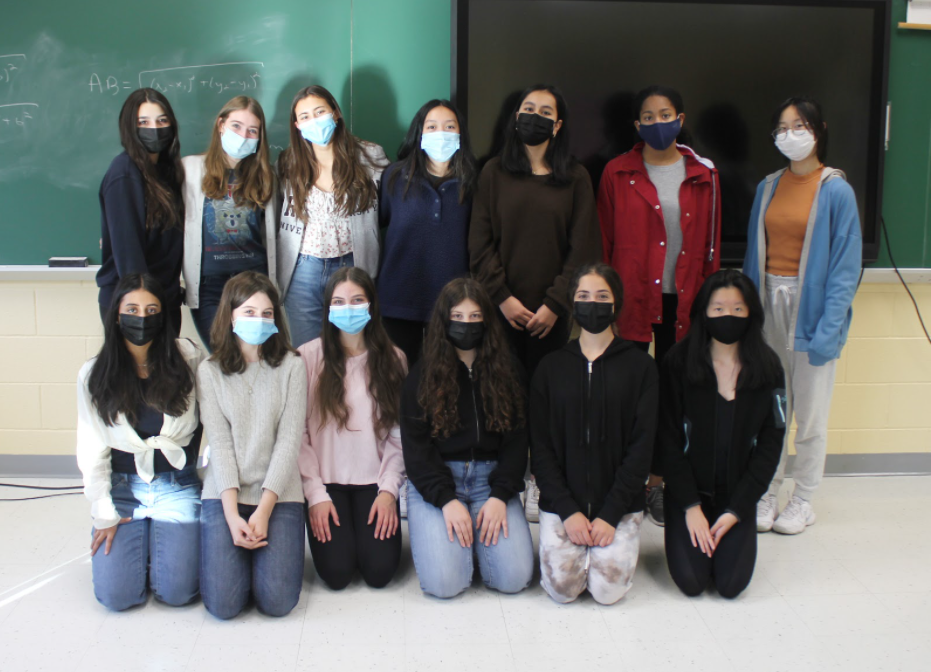

Students Who Code (associated with Girls Who Code)
Tech jobs are among the fastest growing in the country, yet girls are being left behind. While girls’ interest in computer science ebbs over time, the biggest drop off happens between the ages of 13-17.
We want to encourage females in Byram Hills to explore fields in computer science in a fun nurturing environment with like minded girls.
GWC members will learn and practice one or more coding languages, explore the foundations of computer science, discuss current events in STEM, and learn about inspirational women in the field of computer science and coding. This year, we are specifically focusing on building a website to organize the school’s clubs.
We meet on Thursdays in Mr. Lewick's room (417).
Classroom code: bwcapui
Presidents: Alana Foreman and Sofia Cobos
<